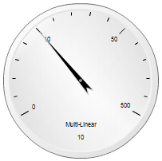

Predefined gauges are preconfigured Flex 4 components
which present a simple interface to the developer. They present a
single marker on a single scale with an optional single track.
All predefined gauges are defined in the com.ibm.ilog.elixir.gauges.components package.
The following tables give an overview of the predefined
gauges: circular gauges, knobs, horizontal gauges, and vertical gauges.
Predefined Gauges
| HLinearGauge | Horizontal gauge with a linear scale | |
|---|---|---|
| HMultiLinear Gauge | Horizontal gauge with a multi-linear scale | |
| HCategoryGauge | Horizontal gauge with a category scale | |
| VLinearGauge | Vertical gauge with a linear scale | |
| VMultiLinear Gauge | Vertical gauge with a multi-linear scale | |
| VCategoryGauge | Vertical gauge with a category scale | |
| Circular LinearGauge (default skin) | Circular gauge with a linear scale |  |
| Circular MultiLinearGauge | Circular gauge with a multi-linear scale |  |
| Circular CategoryGauge | Circular gauge with a category scale | |
| SemiCircular LinearGauge | Semi-circular gauge with a linear scale | |
| SemiCircular MultiLinearGauge | Semi-circular gauge with a multi-linear scale | |
| SemiCircular CategoryGauge | Semi-circular gauge with a category scale |
About Predefined Gauge Skins
IBM ILOG Elixir provides 2 skin sets:
- com.ibm.ilog.elixir.gauges.skins.spark.*: Contains the default skins for gauges. These skins are designed to match the default spark components style.
- com.ibm.ilog.elixir.gauges.skins.glossy.*: Contains alternative skins for gauges. These glossy skins give an overview of appearance customization capabilities.
For glossy skins you can use either CSS or the
skinClass property on a particular gauge instance.
Horizontal gauges use HorizontalGaugeSkin, Vertical gauges use VerticalGaugeSkin and circular gauges use CircularGaugeSkin or SemiCircularGaugeSkin. Using Linear Gauges
Linear Gauges are
HLinearGauge, VLinearGauge and CircularLinearGauge. These gauges use a linear scale. A linear gauge is primarily characterized
by the following properties:- A minimum value:
minimum - A maximum value:
maximum - A major tick interval:
majorTickInterval - A minor tick interval:
minorTickInterval - A snap interval:
snapInterval
The following example demonstrates how to use these gauges:
<?xml version="1.0" encoding="utf-8"?>
<s:Application xmlns:fx="http://ns.adobe.com/mxml/2009"
xmlns:s="library://ns.adobe.com/flex/spark"
xmlns:mx="library://ns.adobe.com/flex/halo">
<s:Group xmlns:fx="http://ns.adobe.com/mxml/2009"
xmlns:s="library://ns.adobe.com/flex/spark"
xmlns:mx="library://ns.adobe.com/flex/halo" width="800"
height="100%" xmlns:ibm="http://www.ibm.com/xmlns/prod/ilog/elixir/2010">
<s:layout
<s:VerticalLayout/>
</s:layout>
<fx:Script>
<![CDATA[
import com.ibm.ilog.elixir.gauges.skins.spark.SemiCircularGaugeSkin;
]]>
</fx:Script>
<ibm:HLinearGauge width="100%" title="Number 1"/>
<ibm:HLinearGauge width="100%" orientation="right to left" title="Number2"/>
<s:HGroup width="100%">
ibm:CircularLinearGauge width="100%" height="100%" title="Number 3"/>
ibm:VLinearGauge height="100%" title="Number 4"/>
</s:HGroup>
<s:HGroup width="100%">
<ibm:CircularLinearGauge width="100%" height="100%"
title="Number 5"
skinClass="com.ibm.ilog.elixir.gauges.skins.spark.SemiCircularGaugeSkin"/>
<ibm:VLinearGauge height="100%" orientation="bottom to top"
title="Number 6"/>
</s:HGroup>
</s:Group>
<s:Application>
Using Multi-Linear Gauges
HMultiLinearGauge, VMultiLinearGauge and CircularMultiLinearGauge are the Multi-Linear Gauges. These gauges use a multi-linear scale,
which is defined by a set of numbers that correspond to major tick
values. This allows you to display a very large interval of numbers,
which would be difficult to render with a linear scale.To configure these kinds of gauges., you set the
majorTickValues properties.The following example demonstrates how to use these gauges:
<?xml version="1.0" encoding="utf-8"?>
<s:Application xmlns:fx="http://ns.adobe.com/mxml/2009"
xmlns:s="library://ns.adobe.com/flex/spark"
xmlns:mx="library://ns.adobe.com/flex/halo"> <s:Group xmlns:fx="http://ns.adobe.com/mxml/2009"
xmlns:s="library://ns.adobe.com/flex/spark"
xmlns:mx="library://ns.adobe.com/flex/halo" width="800">
height="100%" xmlns:ibm="http://www.ibm.com/xmlns/prod/ilog/elixir/2010">
<s:layout
<s:VerticalLayout
<s:layout
<fx:Script
<![CDATA[
import com.ibm.ilog.elixir.gauges.skins.spark.SemiCircularGaugeSkin;
]]> </fx:Script>
<ibm:HLinearGauge width="100%" title="Number 1"/>
<ibm:HLinearGauge width="100%" orientation="right to left" title="Number2"/>
<s:HGroup width="100%">
ibm:CircularLinearGauge width="100%" height="100%" title="Number 3"/>
ibm:VLinearGauge height="100%" title="Number 4"/>
<s:HGroup>
<s:HGroup width="100%">
<ibm:CircularLinearGauge width="100%" height="100%"
title="Number 5"
skinClass="com.ibm.ilog.elixir.gauges.skins.spark.SemiCircularGaugeSkin"/>
<ibm:VLinearGauge height="100%" orientation="bottom to top"
title="Number 6"/>
<s:HGroup>
<s:Group>
<s:Application>
Using Category Gauges
HCategoryGauge, VCategoryGauge and CircularCategoryGauge are the Category Gauges. These gauges use a category scale to show
a discrete set of strings. This is useful to define components such
as knobs.You set the majorTickValues properties to configure these
kinds of gauges.
The following example demonstrates how to use these gauges:
<?xml version="1.0" encoding="utf-8"?>
<s:Application xmlns:fx="http://ns.adobe.com/mxml/2009"
xmlns:s="library://ns.adobe.com/flex/spark"
xmlns:mx="library://ns.adobe.com/flex/halo">
<s:Group xmlns:fx="http://ns.adobe.com/mxml/2009"
xmlns:s="library://ns.adobe.com/flex/spark"
xmlns:mx="library://ns.adobe.com/flex/halo" width="800" height="100%" xmlns:ibm="http://www.ibm.com/xmlns/prod/ilog/elixir/2010">
<s:layout>
<s:VerticalLayout/>
</s:layout>
<fx:Script>
<![CDATA[
import com.ibm.ilog.elixir.gauges.skins.spark.SemiCircularGaugeSkin;
[Bindable]
private var scaleValues:Vector.<Object> =
Vector.<Object>(["Off", "Low", "Medium", "High", "Max"]);
]]>
</fx:Script>
<ibm:HCategoryGauge width="100%" title="Number 1" majorTickValues="{scaleValues}"/>
<ibm:HCategoryGauge width="100%" orientation="right to left" title="Number2"
majorTickValues="{scaleValues}"/>
<s:HGroup width="100%">
<ibm:CircularCategoryGauge width="100%" height="100%" title="Number 3"
majorTickValues="{scaleValues}"/>
<ibm:VCategoryGauge height="100%" title="Number 4"
majorTickValues="{scaleValues}"/>
</s:HGroup>
<s:HGroup width="100%">
<ibm:CircularCategoryGauge width="100%" height="100%"
majorTickValues="{scaleValues}"
title="Number 5"
skinClass="com.ibm.ilog.elixir.gauges.skins.spark.SemiCircularGaugeSkin"/>
<ibm:VCategoryGauge height="100%" orientation="bottom to top"
majorTickValues="{scaleValues}"
title="Number 6"/>
</s:HGroup>
</s:Group>
</s:Application>
Predefined Gauges user interactions
If
editable is set to true, you can edit the value of the gauge using the
mouse or the keyboard.Mouse interactions are configured using
mouseMode, editMode, liveDragging, animationDuration and easer properties. See GaugeMarkerBase reference manual for more information.| Key | Action |
|---|---|
| Up arrow / Left arrow | Increase the value |
| Down arrow / Right arrow | Decrease the value |
| Home | Set the value to the minimum valid value |
| End | Set the value to the maximum valid value |